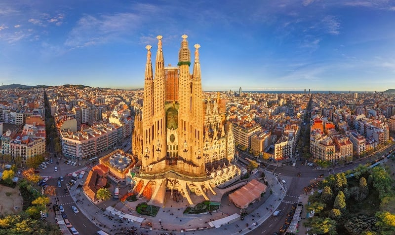

Bem-vindo a EuroTour
Que tal conhecermos alguns lugares?
Paris, França
Torre Eiffel
A Torre Eiffel é um dos monumentos mais icônicos do mundo. Localizada no coração de Paris, oferece vistas deslumbrantes da cidade.
Itália, Roma
Coliseu
Roma, a capital da Itália, é uma cidade cosmopolita, enorme, com quase 3.000 anos de arte, arquitetura e cultura influentes no mundo todo e à mostra. Ruínas antigas como o Fórum e o Coliseu evocam o poder do antigo Império Romano.
Espanha, Barcelona
Cidade de Barcelona
Barcelona, capital cosmopolita da região da Catalunha na Espanha, é conhecida pela sua arte e arquitetura. A fantástica igreja da Sagrada Família e outros monumentos modernistas projetados por Antoni Gaudí marcam a cidade.